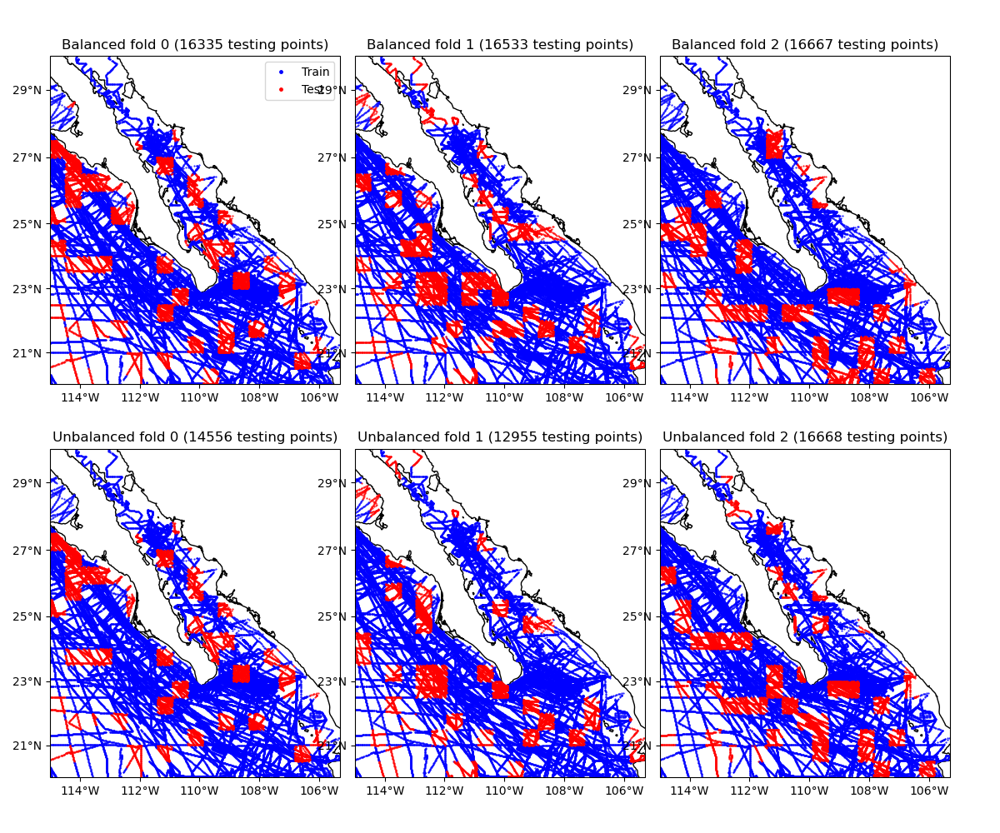

Note
Click here to download the full example code
K-Fold cross-validation with blocks¶
Cross-validation scores for spatial data can be biased because observations are
commonly spatially autocorrelated (closer data points have similar values). One
strategy to reduce the bias is to split data along spatial blocks
[Roberts_etal2017]. Verde offers the cross-validator
verde.BlockKFold, which is a scikit-learn compatible version of k-fold
cross-validation using spatial blocks.
When splitting the data into training and testing sets,
BlockKFold first splits the data into spatial blocks and then
splits the blocks into folds. During k-fold cross-validation, one fold is used
as the testing set while the rest are used for training. Since each block can
have a different number of data points, assigning the same number of blocks to
each fold can lead to folds with very different numbers of data points.
By default, BlockKFold takes care to balance the folds to have
approximately equal number of data points.
Alternatively, you can turn off balancing to have each fold contain the same
number of blocks.
This example shows the data assigned to each of the first 3 folds of a blocked k-fold iteration, with and without balancing. Notice that the unbalanced folds have very different numbers of data points.
import numpy as np
import matplotlib.pyplot as plt
import cartopy.crs as ccrs
import verde as vd
# Let's split the Baja California shipborne bathymetry data
data = vd.datasets.fetch_baja_bathymetry()
coordinates = (data.longitude, data.latitude)
# Create cross-validators with blocks of 30 arc-minutes with shuffling enabled.
spacing = 30 / 60
# Set the random state so that these plots don't vary when we rerun the example
random_state = 10
kfold = vd.BlockKFold(spacing=spacing, shuffle=True, random_state=random_state)
# Make another cross-validator with fold balancing turned off. Without
# balancing, the folds can have very different number of data points in them
# (which may bias the scores).
kfold_unbalanced = vd.BlockKFold(
spacing=spacing,
shuffle=True,
random_state=random_state,
balance=False,
)
# The BlockKFold is compatible with scikit-learn, so instead of giving it a
# coordinates tuple (like we use in Verde), we have to put the coordinates in a
# feature matrix (X in scikit-learn jargon). Each column will have one of the
# coordinate values. This is usually not required if using this cross-validator
# with Verde functions and classes. You can pass it to verde.cross_val_score,
# for example.
feature_matrix = np.transpose(coordinates)
# Create the folds for the balanced and unbalanced cross-validators to show the
# difference.
balanced = kfold.split(feature_matrix)
unbalanced = kfold_unbalanced.split(feature_matrix)
# Cartopy requires setting the coordinate reference system (CRS) of the
# original data through the transform argument. Their docs say to use
# PlateCarree to represent geographic data.
crs = ccrs.PlateCarree()
# Make Mercator maps of the two cross-validator folds
fig, axes = plt.subplots(
2,
3,
figsize=(12, 10),
subplot_kw=dict(projection=ccrs.Mercator()),
sharex=True,
sharey=True,
)
for row, title, folds in zip(axes, ["Balanced", "Unbalanced"], [balanced, unbalanced]):
for i, (ax, fold) in enumerate(zip(row, folds)):
train, test = fold
ax.set_title("{} fold {} ({} testing points)".format(title, i, test.size))
# Use an utility function to setup the tick labels and the land feature
vd.datasets.setup_baja_bathymetry_map(ax)
ax.plot(
coordinates[0][train],
coordinates[1][train],
".b",
markersize=1,
transform=crs,
label="Train",
)
ax.plot(
coordinates[0][test],
coordinates[1][test],
".r",
markersize=1,
transform=crs,
label="Test",
)
# Place a legend on the first plot
axes[0, 0].legend(loc="upper right", markerscale=5)
plt.subplots_adjust(
hspace=0.1, wspace=0.05, top=0.95, bottom=0.05, left=0.05, right=0.95
)
plt.show()
Total running time of the script: ( 0 minutes 3.956 seconds)